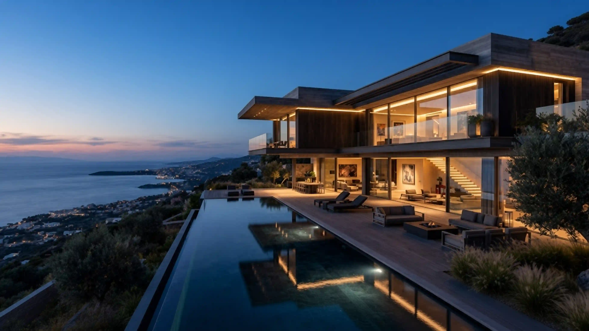
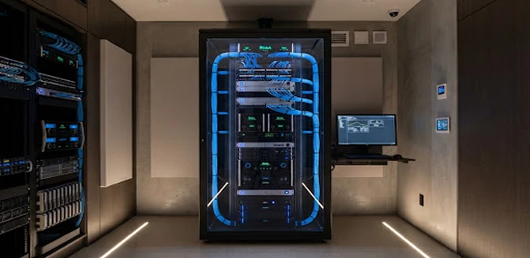
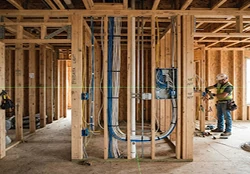

Principle 01
Architectural Invisibility
Technology should never compete with millwork, stonework, or natural light. Flush trimless fixtures, fully hidden low-voltage conduits, and silent thermal convective paths.
STACKLY
Preparing your space
About Lumen // Architectural Engineering
Founded by architects, network engineers, and industrial designers. Stackly integrates intelligence directly into the physical bones of modern homes—so technology disappears and living takes center stage.

Founded
2018 Over 7 years of pure architectural focus.Estates executed
180+ High-end residential commissions worldwide.Reliability SLA
99.98% Local isolated bus reliability score.Protocols
KNX / DALI Guaranteed open industrial architecture.Core principles
Four immutable tenets that guide every wire pulled, enclosure milled, and line of firmware deployed across our projects.
Principle 01
Technology should never compete with millwork, stonework, or natural light. Flush trimless fixtures, fully hidden low-voltage conduits, and silent thermal convective paths.
Principle 02
100% of automation logic executes on local industrial micro-controllers with zero cloud dependency. If external telco lines drop, every scene, shade, and lock continues unimpeded.
Principle 03
We reject short-lived consumer ecosystems and closed protocols. We build on KNX, DALI-2, and BACnet—open industrial standards certified to function reliably for 30+ years.
Principle 04
Color temperature, beam angles, and microclimate adjust organically to coordinate with astronomical twilight and endocrine balance, promoting deep regenerative sleep.
Tactile & structural craft
The physical manifestation of low-voltage technology requires immaculate hidden backbones paired with tactile precision surfaces.

Bespoke Millwork Integration & Fiber Backbones. Every equipment rack is designed in CAD, wired with military-spec cable combs, and staged in our clean facility for 72 continuous hours of thermal burn-in before onsite installation.
Machined Solid Metals. Tactile push-buttons calibrated to exactly 1.8N actuation force. Hand-finished architectural patinas in gunmetal, bronze, and raw brushed brass that age gracefully with the home’s interior limestone and wood.
Multidisciplinary collective
A balanced collective bridging master architecture, electrical engineering, industrial fabrication, and spatial software design.

Co-founder & Principal Architectural Engineer
Former Senior Associate at Foster + Partners. Certified KNX Master with 15 years designing structural integration in North America and Western Europe.
Direct Commissioning
Head of Spatial Software & UX
Ex-Bang & Olufsen interaction lead. Specializes in low-distraction environmental telemetry and zero-latency localized touch panels.
Interface Architecture
Director of Low-Voltage Systems
20+ years enterprise network infrastructure and precision electrical distribution. Oversees rack fabrication, circuit isolation, and surge mitigation.
Hardware Standards
Lead Circadian & Acoustic Designer
Illuminating Engineering Society (IES) member. Translates architectural fenestration into multi-spectral DALI-2 daylight simulations and acoustic zoning.
Photometric LogicArchitectural workflow
Integrated directly from conceptual Revit schematics to pre-drywall inspection, eliminating costly onsite retrofits.

Full review of structural and millwork blueprints. We produce 1:1 CAD cable routing, power dissipation plans, and conduit specifications for general contractors.

Onsite supervision of backbox placements, low-voltage shielded runs, and acoustic isolation rings before insulation and sheetrock sealing.

All primary processors, switches, and matrix amplifiers are assembled and flashed in our controlled laboratory to verify deterministic response times.

Final tuning of photometric astronomical curves, fine micro-switch tactile calibration, hand-off documentation, and continuous proactive health telemetry.
Accreditations & standards
We adhere to globally ratified engineering certifications, ensuring our projects outlive fleeting consumer software generations.
Bespoke residential commissions
Whether you are an architect designing a ground-up residence, an interior designer seeking tactile switches, or an owner commissioning a legacy home—our team is ready for discovery.